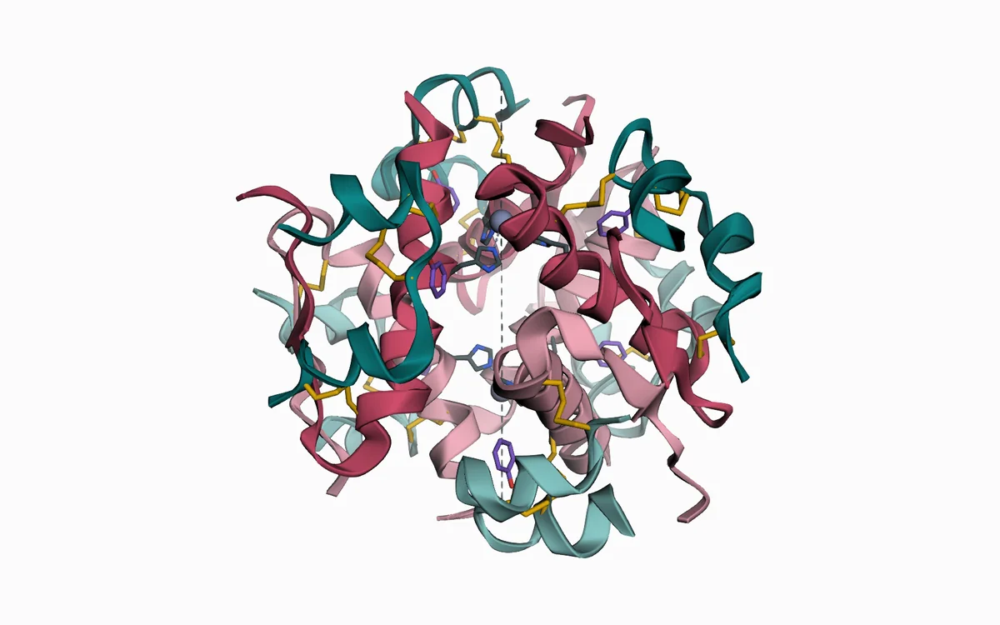
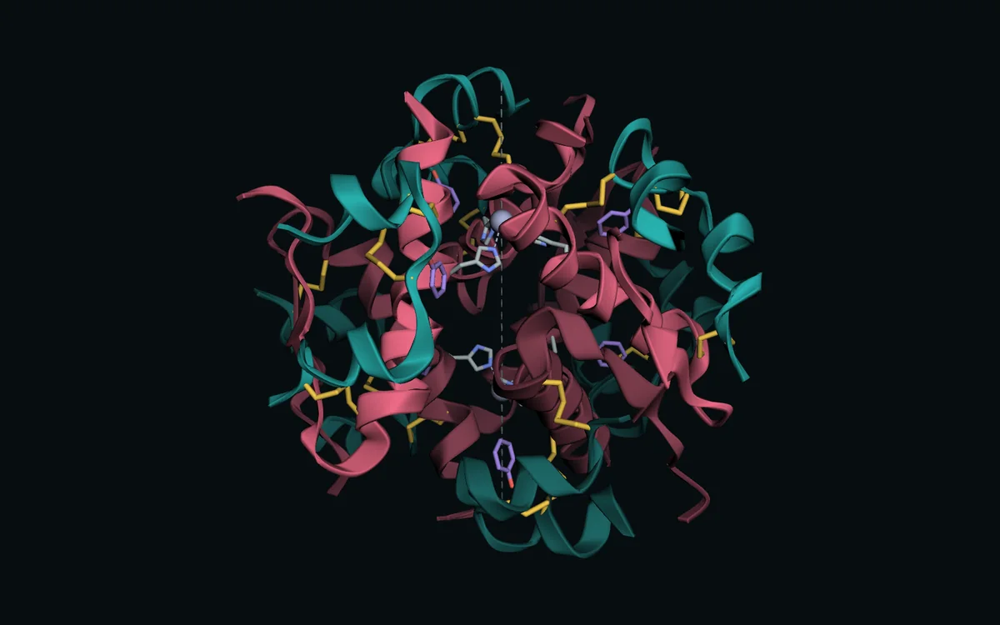
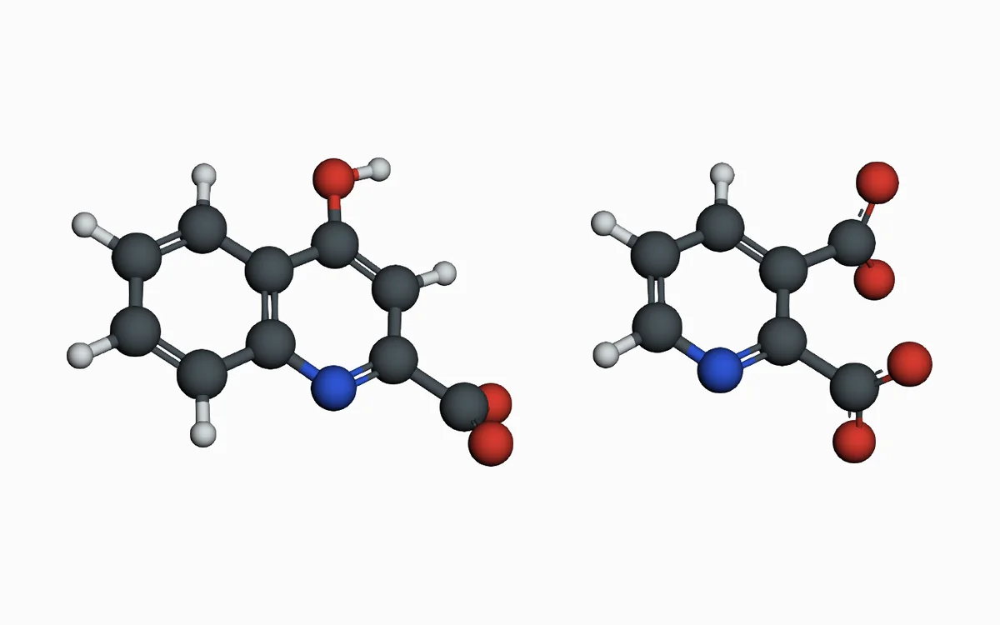
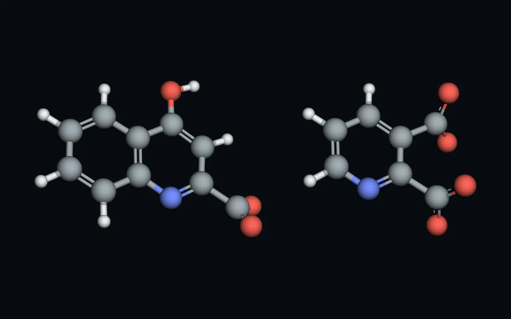

Белок · PDB 1WAV · 2,5 Å
Инсулин
Гексамер с двумя ионами Zn²⁺ и фенолом, димер и мономер с тремя дисульфидными мостиками. На отдельной вкладке показаны замены в шести аналогах, от лизпро до деглудека.
- гексамер · димер · мономер
- 51 остаток
- 6 аналогов
Открыть модель


Метаболиты триптофана · GFN2-xTB
Кинуреновая и хинолиновая кислоты
Два продукта кинуренинового пути с противоположным действием на NMDA-рецептор. Формы при pH 7,4, таутомеры кинуреновой кислоты, заряды атомов, схема пути и сравнение фармакологии.
- 6 форм
- заряды атомов
- схема пути
Открыть модели